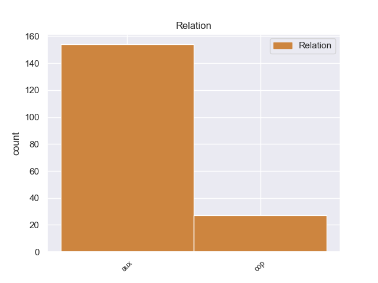
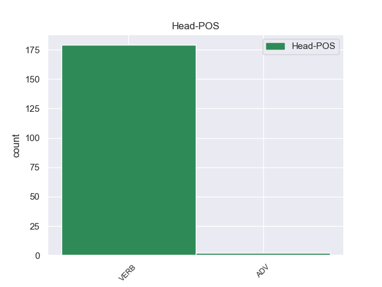
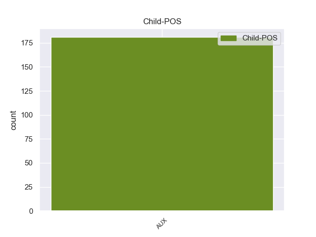

Distribution of features within this leaf



Agreement Rules sorted by frequency.
When the dependent token is None
1 Αυτό _ _ _ _ 0 _ _ _
2 μπορεί μπορεί AUX _ Aspect=Imp|Mood=Ind|Number=Sing|Person=3|Tense=Pres|VerbForm=Fin|Voice=Act 5 aux _ _
3 να _ _ _ _ 0 _ _ _
4 μην _ _ _ _ 0 _ _ _
5 οδηγήσει οδηγήσει VERB _ Aspect=Imp|Mood=Ind|Number=Sing|Person=3|Tense=Pres|VerbForm=Fin|Voice=Act 0 _ _ _
6 σ _ _ _ _ 0 _ _ _
7 τη _ _ _ _ 0 _ _ _
8 λήξη _ _ _ _ 0 _ _ _
9 του _ _ _ _ 0 _ _ _
10 εν _ _ _ _ 0 _ _ _
11 λόγω _ _ _ _ 0 _ _ _
12 ζητήματος _ _ _ _ 0 _ _ _
13 αλλά _ _ _ _ 0 _ _ _
14 , _ _ _ _ 0 _ _ _
15 σ _ _ _ _ 0 _ _ _
16 τη _ _ _ _ 0 _ _ _
17 μορφή _ _ _ _ 0 _ _ _
18 υπό _ _ _ _ 0 _ _ _
19 την _ _ _ _ 0 _ _ _
20 οποία _ _ _ _ 0 _ _ _
21 την _ _ _ _ 0 _ _ _
22 λάβαμε _ _ _ _ 0 _ _ _
23 , _ _ _ _ 0 _ _ _
24 αυτή _ _ _ _ 0 _ _ _
25 η _ _ _ _ 0 _ _ _
26 αίτηση _ _ _ _ 0 _ _ _
27 άρσης _ _ _ _ 0 _ _ _
28 της _ _ _ _ 0 _ _ _
29 ασυλίας _ _ _ _ 0 _ _ _
30 ήταν _ _ _ _ 0 _ _ _
31 , _ _ _ _ 0 _ _ _
32 κατά _ _ _ _ 0 _ _ _
33 την _ _ _ _ 0 _ _ _
34 άποψη _ _ _ _ 0 _ _ _
35 της _ _ _ _ 0 _ _ _
36 Επιτροπής _ _ _ _ 0 _ _ _
37 Νομικών _ _ _ _ 0 _ _ _
38 Θεμάτων _ _ _ _ 0 _ _ _
39 , _ _ _ _ 0 _ _ _
40 απαράδεκτη _ _ _ _ 0 _ _ _
41 , _ _ _ _ 0 _ _ _
42 άποψη _ _ _ _ 0 _ _ _
43 την _ _ _ _ 0 _ _ _
44 οποία _ _ _ _ 0 _ _ _
45 συνιστώ _ _ _ _ 0 _ _ _
46 σ _ _ _ _ 0 _ _ _
47 το _ _ _ _ 0 _ _ _
48 Σώμα _ _ _ _ 0 _ _ _
49 να _ _ _ _ 0 _ _ _
50 υιοθετήσει _ _ _ _ 0 _ _ _
51 . _ _ _ _ 0 _ _ _
Disagree Examples:
1 Η _ _ _ _ 0 _ _ _
2 Ρωσία _ _ _ _ 0 _ _ _
3 έχει έχει AUX _ Aspect=Imp|Mood=Ind|Number=Sing|Person=3|Tense=Pres|VerbForm=Fin|Voice=Act 4 aux _ _
4 επιτρέψει επιτρέψει VERB _ Aspect=Perf|Mood=Ind|Number=Sing|Person=3|Tense=Past|VerbForm=Fin|Voice=Act 0 _ _ _
5 σ _ _ _ _ 0 _ _ _
6 το _ _ _ _ 0 _ _ _
7 παρελθόν _ _ _ _ 0 _ _ _
8 σ _ _ _ _ 0 _ _ _
9 τις _ _ _ _ 0 _ _ _
10 ΗΠΑ _ _ _ _ 0 _ _ _
11 και _ _ _ _ 0 _ _ _
12 σ _ _ _ _ 0 _ _ _
13 το _ _ _ _ 0 _ _ _
14 ΝΑΤΟ _ _ _ _ 0 _ _ _
15 να _ _ _ _ 0 _ _ _
16 χρησιμοποιήσουν _ _ _ _ 0 _ _ _
17 τον _ _ _ _ 0 _ _ _
18 εναέριο _ _ _ _ 0 _ _ _
19 χώρο _ _ _ _ 0 _ _ _
20 της _ _ _ _ 0 _ _ _
21 και _ _ _ _ 0 _ _ _
22 σιδηροδρομικές _ _ _ _ 0 _ _ _
23 γραμμές _ _ _ _ 0 _ _ _
24 της _ _ _ _ 0 _ _ _
25 για _ _ _ _ 0 _ _ _
26 την _ _ _ _ 0 _ _ _
27 μεταφορά _ _ _ _ 0 _ _ _
28 προμηθειών _ _ _ _ 0 _ _ _
29 σ _ _ _ _ 0 _ _ _
30 το _ _ _ _ 0 _ _ _
31 Αφγανιστάν _ _ _ _ 0 _ _ _
32 . _ _ _ _ 0 _ _ _
1 Η _ _ _ _ 0 _ _ _
2 εκπομπή _ _ _ _ 0 _ _ _
3 " _ _ _ _ 0 _ _ _
4 Μένουμε _ _ _ _ 0 _ _ _
5 Ελλάδα _ _ _ _ 0 _ _ _
6 " _ _ _ _ 0 _ _ _
7 με _ _ _ _ 0 _ _ _
8 το _ _ _ _ 0 _ _ _
9 Γιώργο _ _ _ _ 0 _ _ _
10 Αμυρά _ _ _ _ 0 _ _ _
11 και _ _ _ _ 0 _ _ _
12 την _ _ _ _ 0 _ _ _
13 Ρένια _ _ _ _ 0 _ _ _
14 Τσιτσιμπίκου _ _ _ _ 0 _ _ _
15 επισκέπτεται _ _ _ _ 0 _ _ _
16 το _ _ _ _ 0 _ _ _
17 μεσαιωνικό _ _ _ _ 0 _ _ _
18 οικισμό _ _ _ _ 0 _ _ _
19 σ _ _ _ _ 0 _ _ _
20 τη _ _ _ _ 0 _ _ _
21 Χώρα _ _ _ _ 0 _ _ _
22 της _ _ _ _ 0 _ _ _
23 Αλοννήσου _ _ _ _ 0 _ _ _
24 , _ _ _ _ 0 _ _ _
25 την _ _ _ _ 0 _ _ _
26 παλιά _ _ _ _ 0 _ _ _
27 πρωτεύουσα _ _ _ _ 0 _ _ _
28 του _ _ _ _ 0 _ _ _
29 νησιού _ _ _ _ 0 _ _ _
30 που _ _ _ _ 0 _ _ _
31 σήμερα _ _ _ _ 0 _ _ _
32 έχει έχει AUX _ Aspect=Imp|Mood=Ind|Number=Sing|Person=3|Tense=Pres|VerbForm=Fin|Voice=Act 33 aux _ _
33 κηρυχθεί κηρυχθεί VERB _ Aspect=Perf|Mood=Ind|Number=Plur|Person=3|Tense=Past|VerbForm=Fin|Voice=Act 0 _ _ _
34 διατηρητέα _ _ _ _ 0 _ _ _
35 , _ _ _ _ 0 _ _ _
36 περπατάει _ _ _ _ 0 _ _ _
37 σ _ _ _ _ 0 _ _ _
38 τα _ _ _ _ 0 _ _ _
39 στενά _ _ _ _ 0 _ _ _
40 σοκάκια _ _ _ _ 0 _ _ _
41 ανάμεσα _ _ _ _ 0 _ _ _
42 σ _ _ _ _ 0 _ _ _
43 τις _ _ _ _ 0 _ _ _
44 λιθοσκέπαστες _ _ _ _ 0 _ _ _
45 εκκλησίες _ _ _ _ 0 _ _ _
46 και _ _ _ _ 0 _ _ _
47 θαυμάζει _ _ _ _ 0 _ _ _
48 την _ _ _ _ 0 _ _ _
49 μοναδική _ _ _ _ 0 _ _ _
50 θέα _ _ _ _ 0 _ _ _
51 προς _ _ _ _ 0 _ _ _
52 τη _ _ _ _ 0 _ _ _
53 θάλασσα _ _ _ _ 0 _ _ _
54 . _ _ _ _ 0 _ _ _
1 Θα _ _ _ _ 0 _ _ _
2 μας _ _ _ _ 0 _ _ _
3 βρίσκουν _ _ _ _ 0 _ _ _
4 εδώ _ _ _ _ 0 _ _ _
5 , _ _ _ _ 0 _ _ _
6 να _ _ _ _ 0 _ _ _
7 τους _ _ _ _ 0 _ _ _
8 υποστηρίζουμε _ _ _ _ 0 _ _ _
9 σ _ _ _ _ 0 _ _ _
10 τις _ _ _ _ 0 _ _ _
11 πρωτοβουλίες _ _ _ _ 0 _ _ _
12 τους _ _ _ _ 0 _ _ _
13 και _ _ _ _ 0 _ _ _
14 σ' _ _ _ _ 0 _ _ _
15 αυτές _ _ _ _ 0 _ _ _
16 που _ _ _ _ 0 _ _ _
17 εμείς _ _ _ _ 0 _ _ _
18 οι _ _ _ _ 0 _ _ _
19 ίδιοι _ _ _ _ 0 _ _ _
20 μπορεί μπορεί AUX _ Aspect=Imp|Mood=Ind|Number=Sing|Person=3|Tense=Pres|VerbForm=Fin|Voice=Act 22 aux _ _
21 να _ _ _ _ 0 _ _ _
22 παρουσιάσουμε παρουσιάσουμε VERB _ Aspect=Perf|Mood=Ind|Number=Plur|Person=3|Tense=Past|VerbForm=Fin|Voice=Act 0 _ _ _
23 , _ _ _ _ 0 _ _ _
24 αλλά _ _ _ _ 0 _ _ _
25 δεν _ _ _ _ 0 _ _ _
26 πιστεύω _ _ _ _ 0 _ _ _
27 ότι _ _ _ _ 0 _ _ _
28 πρέπει _ _ _ _ 0 _ _ _
29 να _ _ _ _ 0 _ _ _
30 ψηφίσουμε _ _ _ _ 0 _ _ _
31 αύριο _ _ _ _ 0 _ _ _
32 ή _ _ _ _ 0 _ _ _
33 σήμερα _ _ _ _ 0 _ _ _
34 υπέρ _ _ _ _ 0 _ _ _
35 αυτών _ _ _ _ 0 _ _ _
36 των _ _ _ _ 0 _ _ _
37 τροπολογιών _ _ _ _ 0 _ _ _
38 . _ _ _ _ 0 _ _ _
1 Ειδικότερα _ _ _ _ 0 _ _ _
2 , _ _ _ _ 0 _ _ _
3 η _ _ _ _ 0 _ _ _
4 Τουρκία _ _ _ _ 0 _ _ _
5 έχει έχω AUX _ Aspect=Imp|Mood=Ind|Number=Sing|Person=3|Tense=Pres|VerbForm=Fin|Voice=Act 6 aux _ _
6 υιοθετήσει υιοθετήσω VERB _ Aspect=Perf|Mood=Ind|Number=Sing|Person=3|Tense=Past|VerbForm=Fin|Voice=Act 0 _ _ _
7 ένα _ _ _ _ 0 _ _ _
8 εθνικό _ _ _ _ 0 _ _ _
9 πρόγραμμα _ _ _ _ 0 _ _ _
10 για _ _ _ _ 0 _ _ _
11 την _ _ _ _ 0 _ _ _
12 υιοθέτηση _ _ _ _ 0 _ _ _
13 του _ _ _ _ 0 _ _ _
14 κεκτημένου _ _ _ _ 0 _ _ _
15 προκειμένου _ _ _ _ 0 _ _ _
16 να _ _ _ _ 0 _ _ _
17 εκπληρώσει _ _ _ _ 0 _ _ _
18 όλες _ _ _ _ 0 _ _ _
19 τις _ _ _ _ 0 _ _ _
20 προτεραιότητες _ _ _ _ 0 _ _ _
21 της _ _ _ _ 0 _ _ _
22 εταιρικής _ _ _ _ 0 _ _ _
23 σχέσης _ _ _ _ 0 _ _ _
24 . _ _ _ _ 0 _ _ _
1 Η _ _ _ _ 0 _ _ _
2 Διεθνής _ _ _ _ 0 _ _ _
3 Υπηρεσία _ _ _ _ 0 _ _ _
4 Μελέτης _ _ _ _ 0 _ _ _
5 του _ _ _ _ 0 _ _ _
6 Καρκίνου _ _ _ _ 0 _ _ _
7 ( _ _ _ _ 0 _ _ _
8 IARC _ _ _ _ 0 _ _ _
9 ) _ _ _ _ 0 _ _ _
10 το _ _ _ _ 0 _ _ _
11 έχει έχει AUX _ Aspect=Imp|Mood=Ind|Number=Sing|Person=3|Tense=Pres|VerbForm=Fin|Voice=Act 12 aux _ _
12 κατατάξει κατατάξει VERB _ Aspect=Perf|Mood=Ind|Number=Sing|Person=3|Tense=Past|VerbForm=Fin|Voice=Act 0 _ _ _
13 σ _ _ _ _ 0 _ _ _
14 τις _ _ _ _ 0 _ _ _
15 καρκινογόνες _ _ _ _ 0 _ _ _
16 ουσίες _ _ _ _ 0 _ _ _
17 τρίτης _ _ _ _ 0 _ _ _
18 τάξεως _ _ _ _ 0 _ _ _
19 , _ _ _ _ 0 _ _ _
20 δηλαδή _ _ _ _ 0 _ _ _
21 σ _ _ _ _ 0 _ _ _
22 τις _ _ _ _ 0 _ _ _
23 πιθανώς _ _ _ _ 0 _ _ _
24 καρκινογόνες _ _ _ _ 0 _ _ _
25 για _ _ _ _ 0 _ _ _
26 τον _ _ _ _ 0 _ _ _
27 άνθρωπο _ _ _ _ 0 _ _ _
28 . _ _ _ _ 0 _ _ _